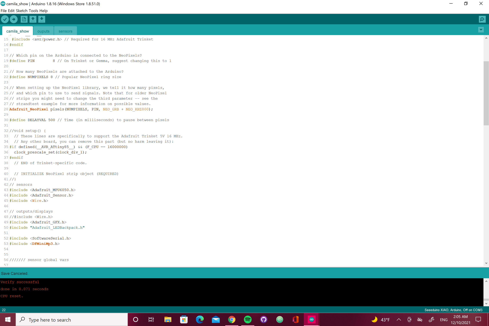

My collaborative machine is a creature who will protect and care all in one. They will be a companion animal that will follow me everywhere I go. They would be similar to a service dog but also a creature that will have surveillance features just in case we get into a bad situation or witness a bad situation. My collaborative machine will alway be alert, having the best hearing if someone or something would sneak up to us. My weakness would probably be too sensitive when it comes to feeling like no one cares or when someone is being disrespectful but my companion will always be there to reassure me that I am fine and to keep going with my day. I think that their weakness would probably be too harsh or tough because they are always in protection mode.
I think that our symbiosis relationship would be commensalism because they are built to protect and be alert. For example if I were to be next to it I would not cause any damage or harm to it because it can function on its own. Nothing happens to it if I'm there or not. If we were to turn it around for my collaborative machine it is a form of protection and having it as a companion for me does affect me because it is protecting me and making sure nothing happens.
Brush-Bots
For my brushbot I used a toothbrush laying around and assembled the circuit on top trying to balance it all together. I used beads that I had laying around and some duck take to finish my piece.
Wearable:
For my wearable I decided to use a mask and add LED around the edges of the mask and have the battery come to one of the edges from the ear so it would not be in my face. The button was also on the side so I can easily reach to turn on the lights. I think it is interesting to create something that has gestures that we do everyday. I know that at least once a day we pres a button or we create that same movement. A challenge for me in this project was making sure I soldered all the way through because at times it looked like it connected but then the circuit would not be complete. I felt pretty successful after it was all done because I learned something new and I can make lights turn on.
Microbox
These images is the hard ware before assembling it all together into the box.
the above images are from learning the hard ware and the 2 videos are from the quiz we had in understanding how to connect on the breadboard.
This is what my mircobox ended up being like. It is inspired by day of the dead and I added music that connects with the theme. The first one is called Llorona its a song about a Mexican myth that is usually used to scare childern.The second song is from The Misfits called Day of the Dead.
SerialUi
phase 1
phase 2
phase 3
Final Project Performance
Hardware
Software

Everything put together
Videos
For my project I wanted to create a cajon that plays sound once it is touched and turns
light on as it is touch. I wanted to use the vibration that we create to be able
to show how the cajon works and have fun with it to be able to turn on the lights. I think us having the control
of doing something to make it work is also what satisfies the user therefore we control the sound and it can be the music we like.
The purpose was to have and engaging Performance once the cajon is touched.
Challenges that were faced during the making of the project was getting the sensor to play both
sound and be able to turn on the lights. I was able to turn the light on with the sensor and
the speaker only buzzed when it was incorperated. The speaker did work on its own and is able to play multiple tracks.
I think with more coding knowedge and understanment of how arduino works would have been a lot more helpful.
Aesthetically what worked really well was having the square cut-out for the light because then we can actually see
throught it. Also what worked was having the whole in the back for the speaker because it created a better and
cleaner sound.
Readings
Reading #1 from NBC
In chapter 1 the term cyborg came to play in the 1960s. The chapter is expressing the development of cyborgs and different views that doctors have seen. It talks about the experiment of creating a cyborg creature that in result came to be a rat that had an osmotic pump implanted. The Chapter goes on more about different types of implants that have been tested and can be seen as cyborgs.
1. Summarize the distinction(s) from the traditional Klines & Clines definition of the cyborg vs. the one that Clark is proposing as the main thesis of his book?
Klines and Clines wanted cyborgs to be more as evolutionary something that enhances the body. They see it as having artificial and mechanical attachment to their body that is helping them stay alive. While Clark sees it as cyborgs should be both beneficial to technology and humans. He sees it as the relationship that we have to these technologies that we do not need attached to our body.
2. From The book, "Cyberneticists were especially interested in self-regulating systems."What are 2 or more examples of these, make sure to include both biological systems and also non-biological systems.
Some examples from the book are the toilets that are non biological systems. Biological examples are respiration and nervous systems.
One definition of a hybrid human in literature would be a vampire because half human half bat.
Chapter 2 talks about transparent and opaque technology. It talks about how transparency is something that is more natural. Technology that is easy to use or be able to see so clearly we do not know it there. Also it goes throughout the chapter the difference of both of them giving us examples with the dictionary and the watch.
1. Summarize a definition as described in the book of what the significant attributes are for 'opaque' technology vs. 'transparent' technology.
Opaque technology attributes require skill and capacity that do not come naturally. Meaning that it is not as clear but it is there. Transparent technology that fits within our lives seeing it is very visible comes more naturally.
2. Give some examples of technology that might be better served if it were more transparent and also give some examples of a technology that should be more opaque.
Technology that should be more transparent when your computer crashes and a bunch of errors pop up it would be nice to understand what the problem is. I think wifi or technology that runs very important information should be opaque because hackers know how to break those walls.
3.Does the watch and dictionary example discussed in the book, seem valid to you? Why?
As in terms of transparent or opaque technology I think that it is transparent once it is learned we don't know right away how to use it or if we actually know what it means. Most of the time when it comes to answering questions whether it is the time or if it the definitions we know most of it but not all of it.
Reading #2 from NBC
Chapter 3
This chapter is talked about how our brain functions and how we tend to think. Our brain depends a lot on our sensory action whether it smells, touch, hearing, or seeing. It talks about how our brain tends to automatically try to connect to something that has been registered from the past. It is not always accurate that our brain will connect to it. It also expressed if we had people to think for us that we would become lazy or not push ourselves to do more. It would be the idea of us not needing to think anymore because it can think for us. There are different forms of learning and different forms that our brain accepts and develops. Our bain instinct is to automatically connect to what is similar or to what seems to be familiar to it.
Q1.Related to the text descriptions of how our senses work with our brain, explain your experiences where your senses have momentarily misled you or someone you know. Give examples of this.
I thinking that one of my senses that miss led me is my sense of smell. It is mostly with food. Most of the time I am able to tell what my mom is cooking based on the smell that is in the air but sometimes there is a time where I think it is going to be “good food” and it’s not. And it’s not that my mom didn’t cook well it is just foods that I don’t really like. There are also times that I think I know someone or looks familiar just by a quick look and then when I get closer it turns out it is another person that I don’t know. I think that our mind associates similar things together and brings them to one and the first thing that comes up to mind is what we think automatically.
Q2. What do the 'The Early Adopters Dream Technology' example on page 80 and the mangrove analogy starting on page 81 say about the role of language and its relationship to thought and meaning? Do you agree with the Authors assertions? Whether you agree or not, please explain why.
The role of language Is to help us be able to think faster. Make learning and thinking a lot easier. The technology would be able to make our strengths and weaknesses to be abate to retain information a lot easier for us. People would think that it would create lazy people who would want others to think for them and find the solutions for them. I do believe that writing ideas down and developing them help create a better thinking process and helps us furthermore the idea. It creates both visual and thoughtful ideas that can be more concrete as to what can solve a problem. Language becomes the foundation of thought and meaning.
Q3. The Ideas of 'meta learning' (page 67) and constructive learning (page 83) are brought up in this chapter. What do these 2 ideas have in common in terms of the process of learning and using information and memory? Please elaborate your thoughts on how you can 'learn' something from this
What they have in common is processing learning is retrieving the information. They use what we already know and connect it to the newer information that is given to be able to create. We can learn from this by the form we take in the information we always take it in the same form over and again.
Chapter 4
This chapter talked about telepresence and how it is now developing more and more. It expresses that the development s increasing and it changing so quickly that it will end up displacing a lot of things. Usually, telepresence is seen when testing the movement of robotics like attaching it to our hand to be able to make it move. Without telepresence, some things would not be able to function or be improved.
Q1. What are the 2 main components of action discussed in the book, that is required for Telepresence to exist and function properly?
Two main components that are discussed in the book that is required to represent telepresence to exist are forced feedback and visual feedback. This allows the telepresence to be able to communicate with one another and be able to function properly. Therefore receiving and pushing information.
Q2. What form of Telepresence do you think you have experienced? If you have not. What was the closest to it, and what was missing for it to not be telepresence?
I think I have experienced telepresence with zoom meeting because it has made us feel that we are in a classroom but we are not. It allows us to sense the feeling and imagery of a classroom without having to be in a classroom. Virtual reality is a good example even though it does not completely have all senses
Q3. Speculate on what other mechanics and sensory modalities that are based on Telepresence ideas, might be possible. What other ways can we be 'displaced'? Where our perception of where we are and what we are sensing can be 'hacked' or 'rigged'.
I think that the example of crutches that were given the fact that it allows us to be able to balance or know that we are safe because we are relying on that technology. I think what will be displaced will be video calls because of how we can now use background pictures to show that we are in another place but not. I think also about our voices because now we can alter them or use apps that change our voice to sound different.